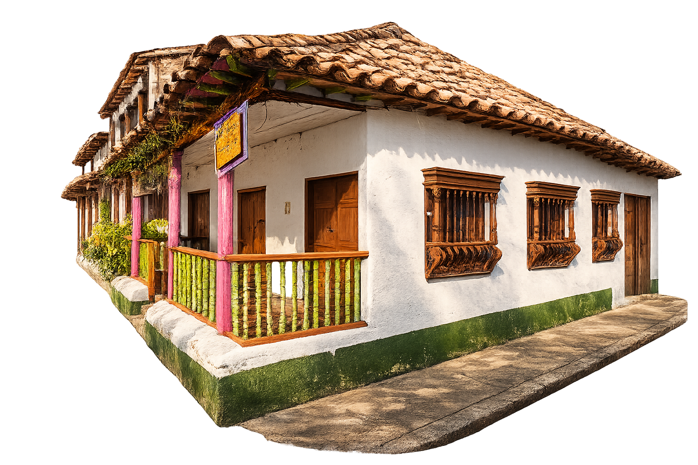
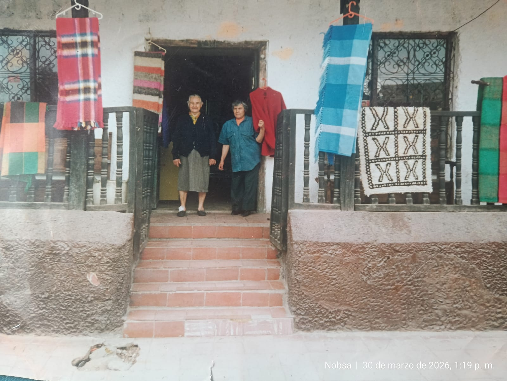
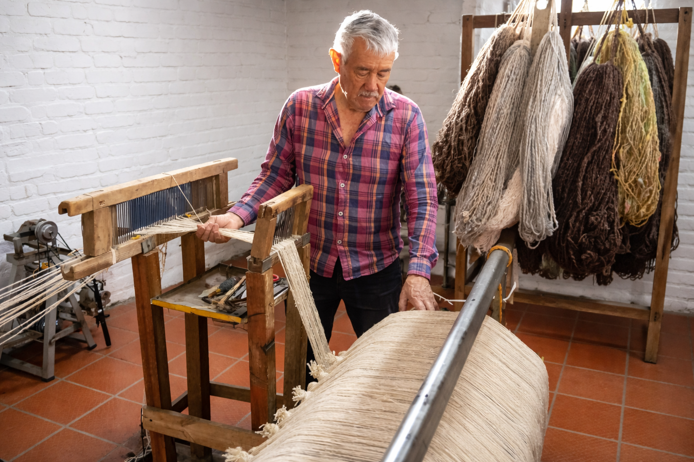
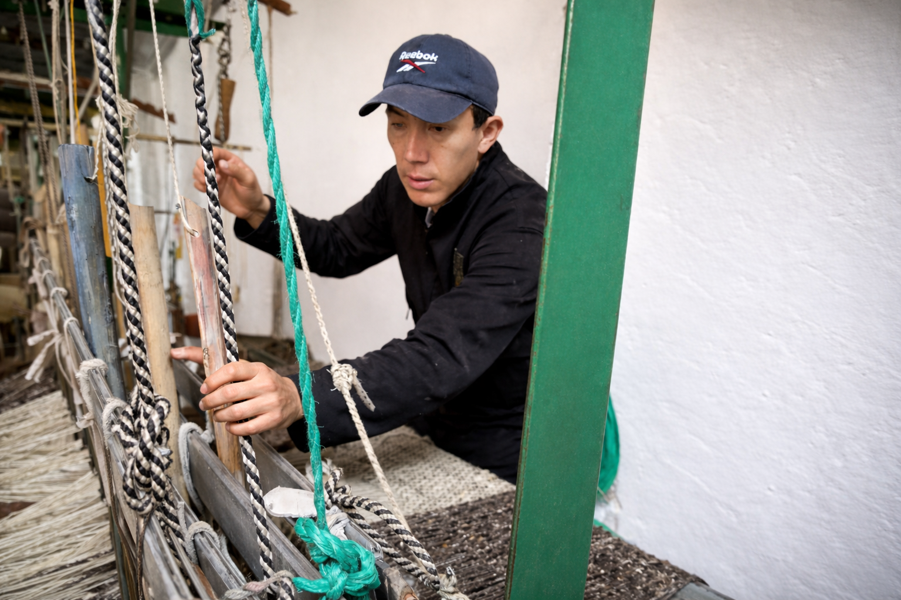
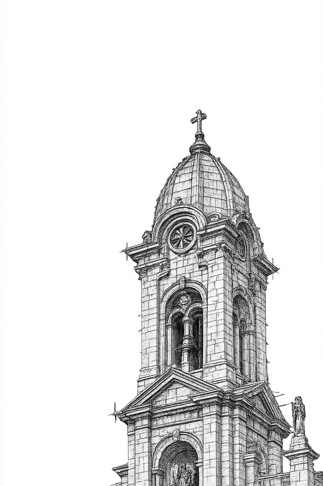

Transito aprendio este arte de su padre, Jesus Cruz a mediados de 1920, habiendo aprendido este arte compro la casa donde hasta dia de doy se conserva el taller, en el cual se han formado varias generaciones de artesanos, entre ellos su hijo y nietos.

Segundo Cruz, ingeniero metalúrgico de profesión, aprendió este arte de su madre Tránsito. Considerado como uno de los mejores en el oficio de la elaboración de ruanas, que han llegado a los rincones del mundo.

Andrés Felipe, hoy gerente de esta empresa, aprendió de su padre Segundo. Ha mantenido el legado de su familia hasta el día de hoy y espera conservarlo por largo tiempo.

Segundo es el encargado de enseñar este arte a sus nietos, la cuarta generación: Gael, hijo de María Angélica, y Juan Felipe, hijo de Andrés Felipe. Ellos serán los encargados de que este arte se mantenga por más generaciones.
